Chef
Experiências gastronómicas privadas
- Jantares privados em casa ou espaço próprio
- Menu de degustação personalizado
- Serviço à mesa incluído
Chef · Alto Alentejo
Chef | Chef Consultor | Cozinheiro Profissional
Transformo identidade alentejana em conceitos, ementas e operações de cozinha que funcionam todos os dias — não só no dia da abertura.
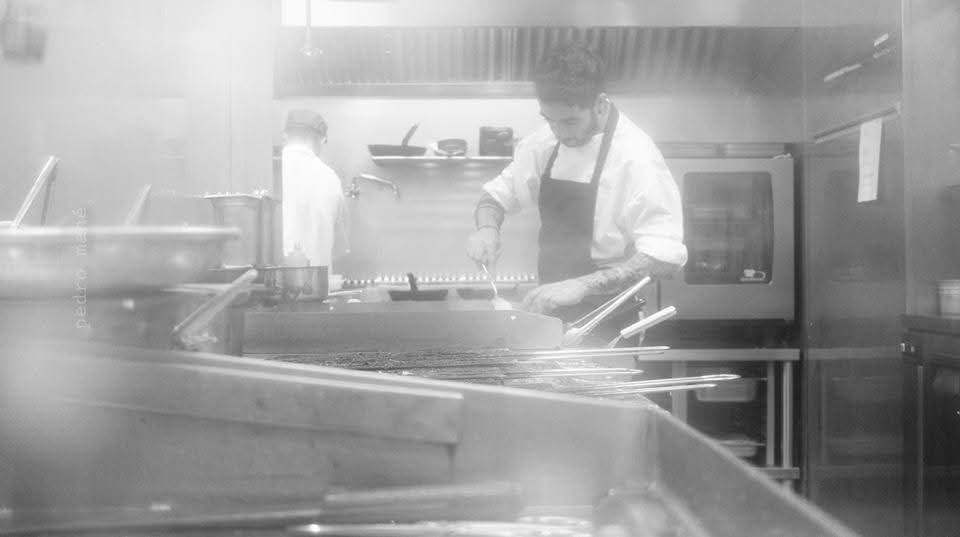
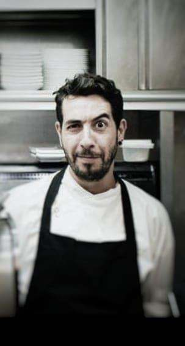
Sobre mim
Mais de 15 anos de experiência em cozinha profissional — da fronteira com Espanha a Lisboa (Sea Me, Valverde Boutique Hotel) — até liderar cozinhas no Alto Alentejo, incluindo o Raya Restaurante (Grupo Terramay), na Praia Fluvial de Azenhas del Rei, e por último, o Massa Fina, do Grupo Vila Galé, em Elvas.
Hoje trabalho lado a lado com donos de restaurantes, cafés e promotores de eventos: desenvolvimento de conceito, criação de menus e fichas técnicas, gestão de custos e implementação de operações de cozinha.
O que me distingue: o rigor técnico de cozinhas de alto padrão aplicado à identidade e aos produtos do Alentejo — não um conceito genérico importado, mas algo que nasce do território.
Esse know-how está disponível de três formas: como chef à sua mesa, como chef consultor do seu negócio, ou como cozinheiro profissional a reforçar a sua cozinha.
Ver serviços e preços →Serviços & Preços
Chef para o seu negócio ou evento, chef privado à sua mesa, chef consultor para o seu negócio, ou cozinheiro profissional para a sua equipa.
Experiências gastronómicas privadas
Jantar de assinatura em casa ou espaço próprio
Desenvolvimento do seu negócio gastronómico
Reforço profissional para a sua cozinha
Valores de referência, calculados por serviço/evento e sujeitos a confirmação — eventos, catering e projetos maiores têm orçamento próprio.
Casos de Estudo
Projetos reais, desenvolvidos no Alentejo.
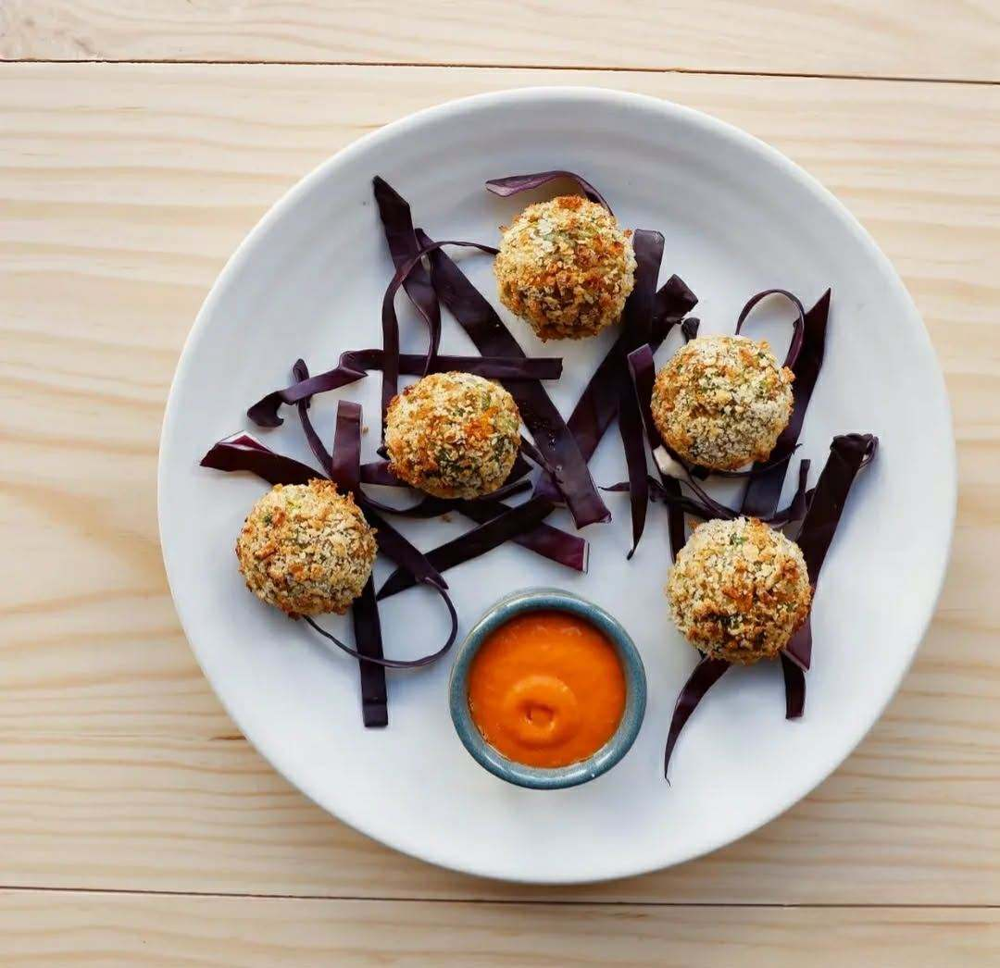
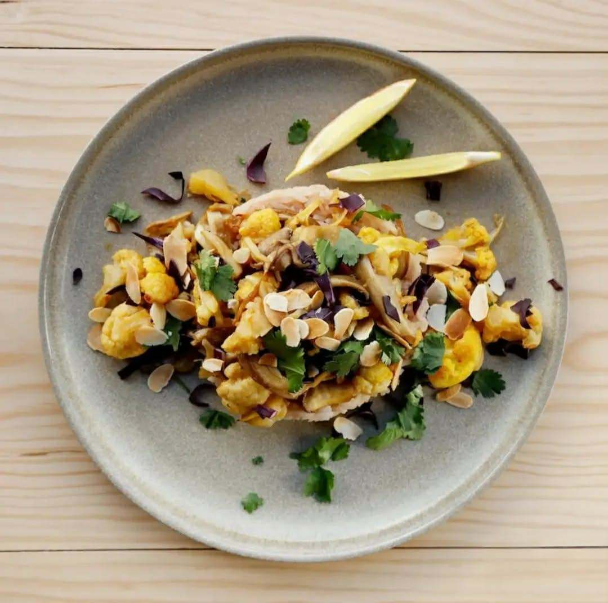
Évora
Contexto: cozinha vegetariana mediterrânica em Évora, de mesas comunitárias, com ementa de ingredientes de época e carta de vinhos naturais e cocktails de autor.
O que fiz: consultoria de conceito e menu vegetariano mediterrânico, incluindo pratos de assinatura como as Bolas de Arroz e Legumes com Molho de Pimento Vermelho e a Couve-Flor e Cogumelos com Arroz Jasmim e Amêndoa.
Resultado: conceito e ementa entregues, atualmente em operação no restaurante em Évora.
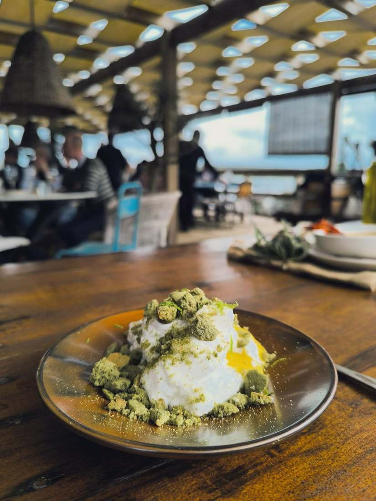
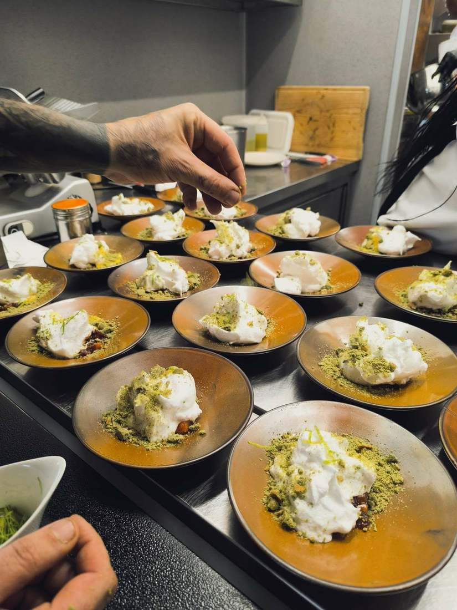
Praia Fluvial de Azenhas del Rei, Alandroal
Contexto: restaurante "farm to beach" do Grupo Terramay, com conceito assente em agricultura regenerativa e produto sazonal da própria quinta.
O que fiz: liderança da equipa de cozinha, reestruturação de ementas sazonais e implementação de sistema de controlo de stock.
Resultado: -10% de desperdício através de formação de equipa, -15% adicional com o novo sistema de stock, e aumento das vendas de pratos premium. A Terramay integra o Top 50 Farmers — 2025 Cohort.
Percurso Profissional
Badajoz, Espanha
Primeiros passos em cozinha profissional, já na fronteira com Espanha — mise en place, confeção de pratos e gestão de encomendas.
Lisboa
Sea Me – Peixaria Moderna, com espaços no Chiado, Time Out Market e Alvalade. Responsabilidades de sous chef de partida em confeção a la carte.
Lisboa
Hotel boutique num palacete histórico, membro Relais & Châteaux e vencedor do prémio "Europe's Leading Luxury Boutique Hotel" nos World Travel Awards, seis anos consecutivos (2020–2025). Show cooking para buffet e à la carte, com técnicas de sous vide e cozinha molecular.
Lisboa
Sous Chef com liderança de equipa de 5 pessoas, -7% de desperdício através de formação, e reestruturação de ementas sazonais valorizando produtores e produto local.
Elvas
Participação ativa na abertura da unidade. Mise en place e show cooking de buffet para até 120 clientes.
Juromenha, Alandroal
Chef responsável pela supervisão diária para 48 clientes e formação de equipa em mise en place e segurança alimentar.
Praia Fluvial de Azenhas del Rei, Alandroal
Conceito farm-to-table com aproveitamento de agricultura regenerativa. Liderança de equipa de 4 pessoas, com -10% de desperdício através de formação; reestruturação de ementas sazonais que aumentou as vendas de pratos premium; sistema de controlo de stock que reduziu o desperdício em 15%.
🏅 A Terramay integra o Top 50 Farmers — 2025 Cohort, reconhecimento à agricultura regenerativa por trás do conceito.
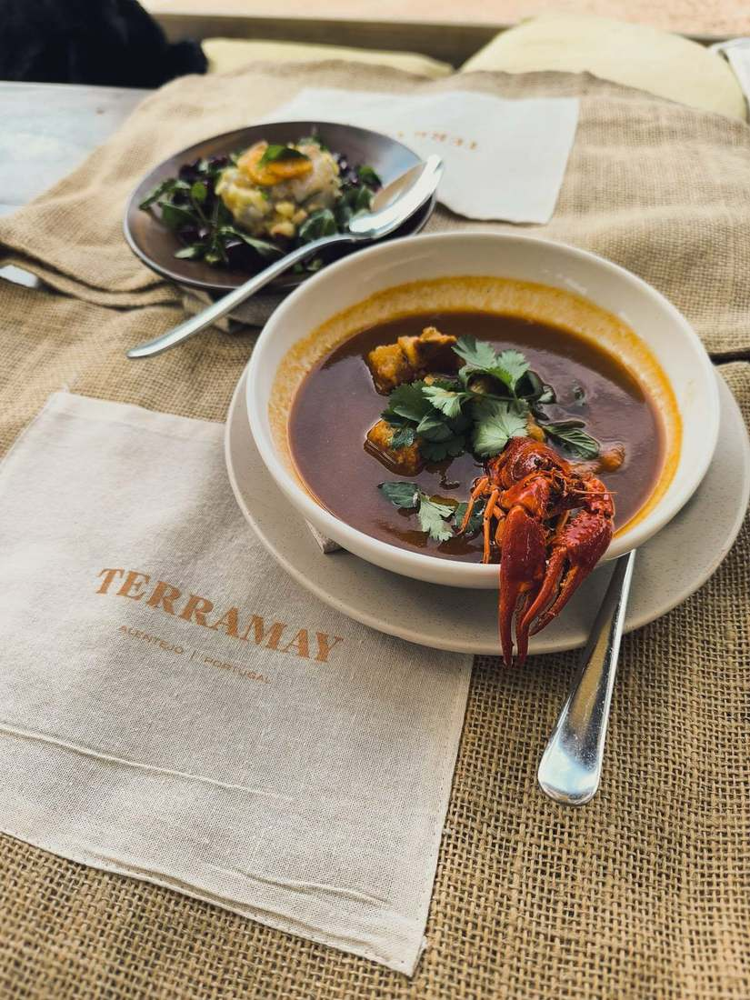
Elvas · atual
Chef de conceito de cozinha italiana. Liderança de equipa, gestão de eventos e sistema de controlo de stock.
Galeria
Pratos, equipas e espaços de alguns dos projetos por onde já passei.
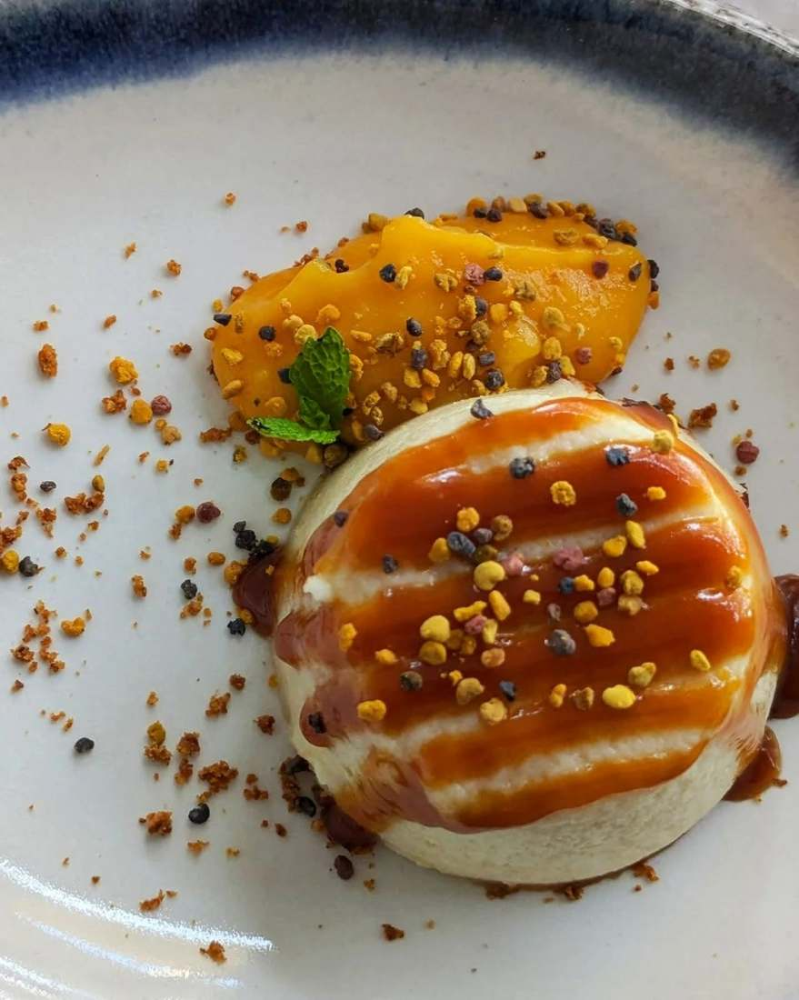
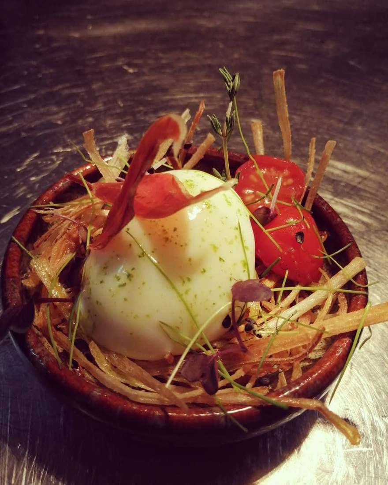
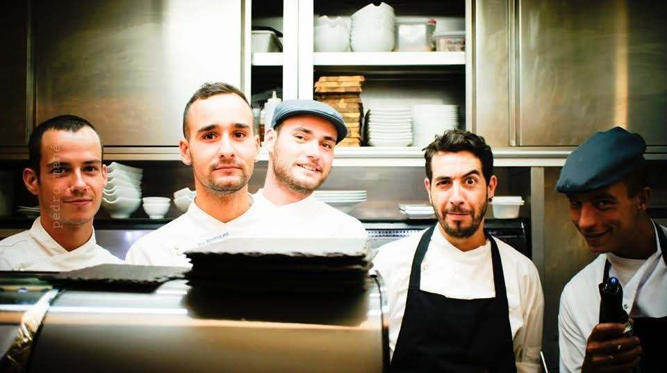
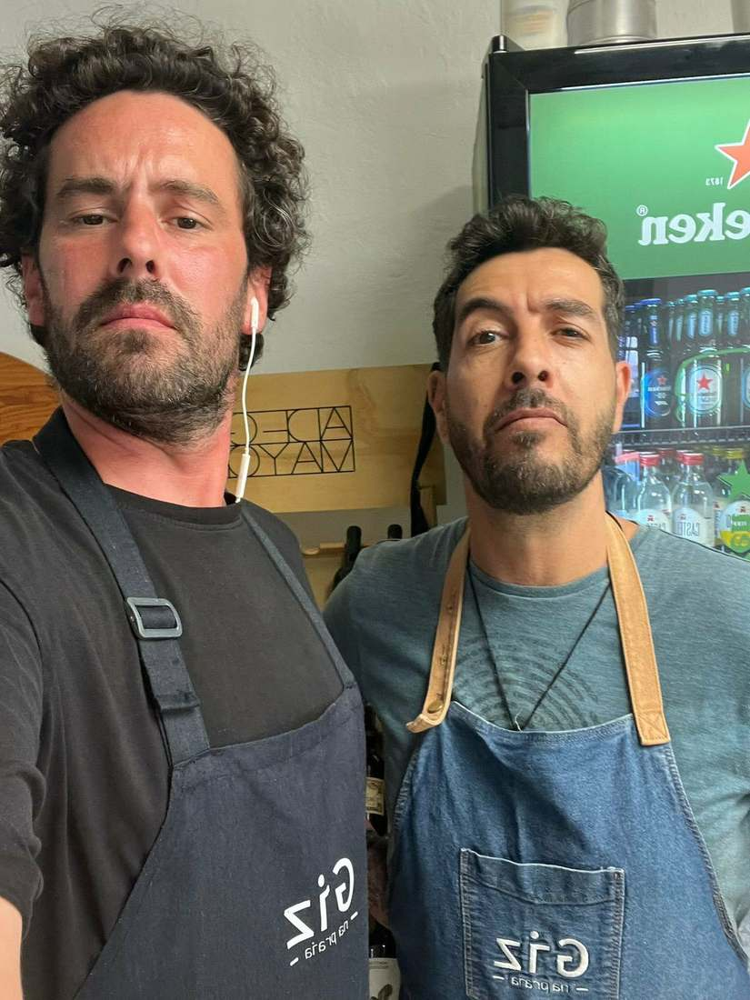
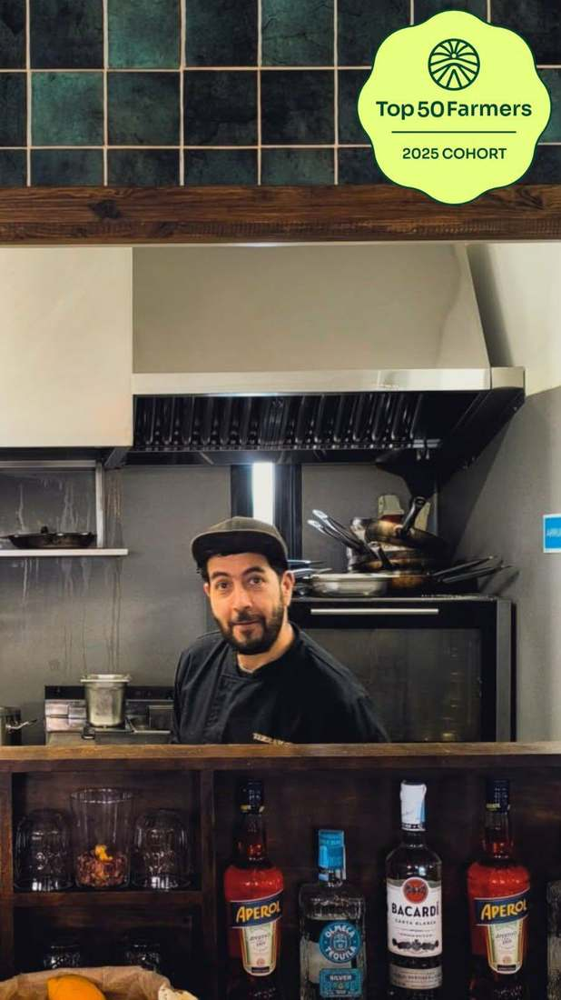
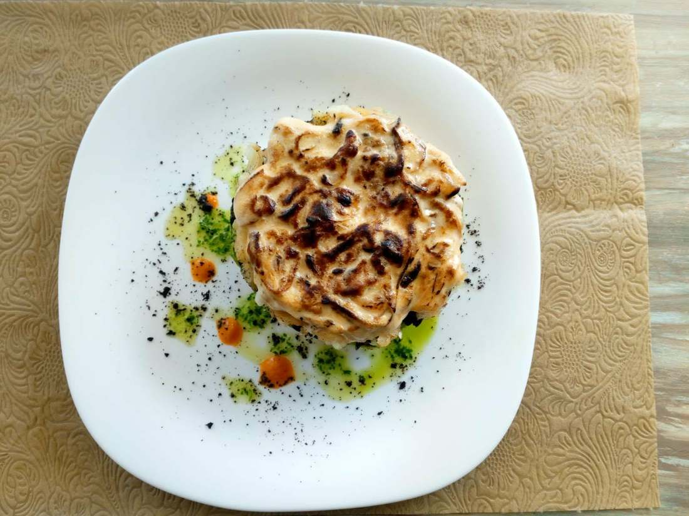
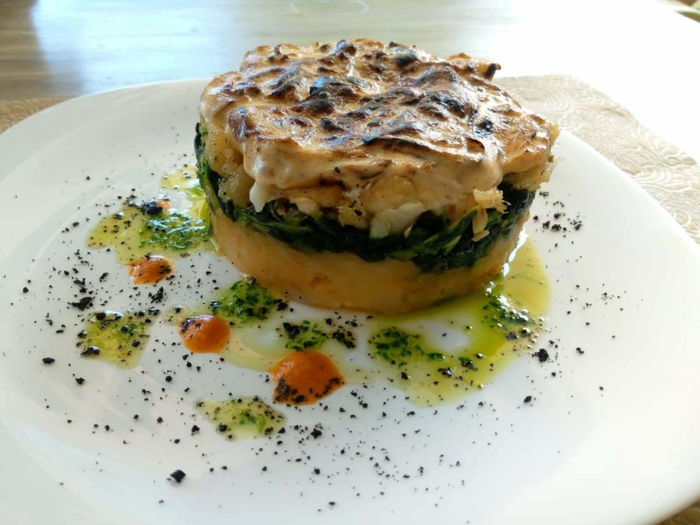
Contacto
Resposta em até 48h úteis. Também recebo clientes de Badajoz e da raia espanhola.